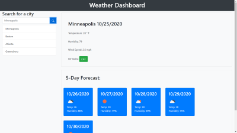

This web application allows a user to easily query any
internantional city's relevant weather information. Weather
Dashboard features an interactive, polished modern UI that
conforms to quality coding standards ensuring a fast and
unique user experience. The application displays relavant
information relating to query results including but not
limited to temperature, humidity, wind speed, UV index, and
a five day forecast!